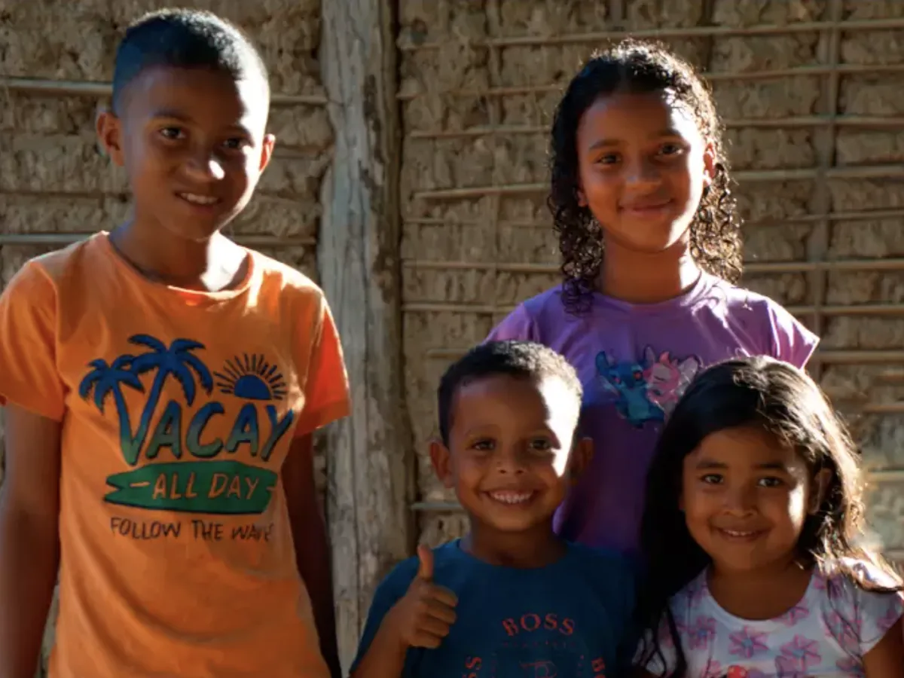

Em 1997 a Plan chegou ao Brasil. Em 2005, uma visita à Ásia mudou a visão do CEO sobre o foco da organização: o olhar sobre a infância virou olhar sobre as meninas. Trinta anos depois, são mais de 130 comunidades e cinco escritórios — quatro deles no Nordeste. A brasilidade que o briefing pede não precisa ser inventada. Ela já é a geografia da casa.
